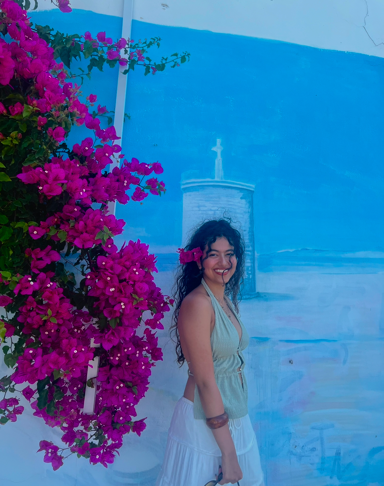
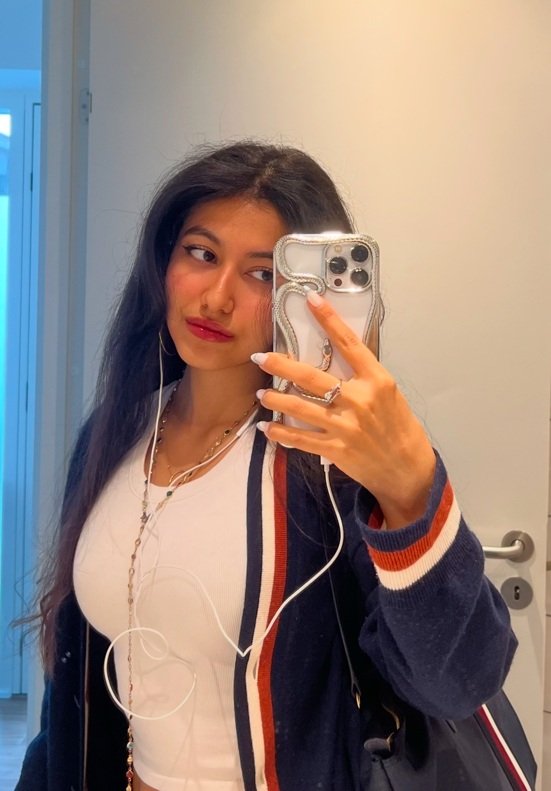
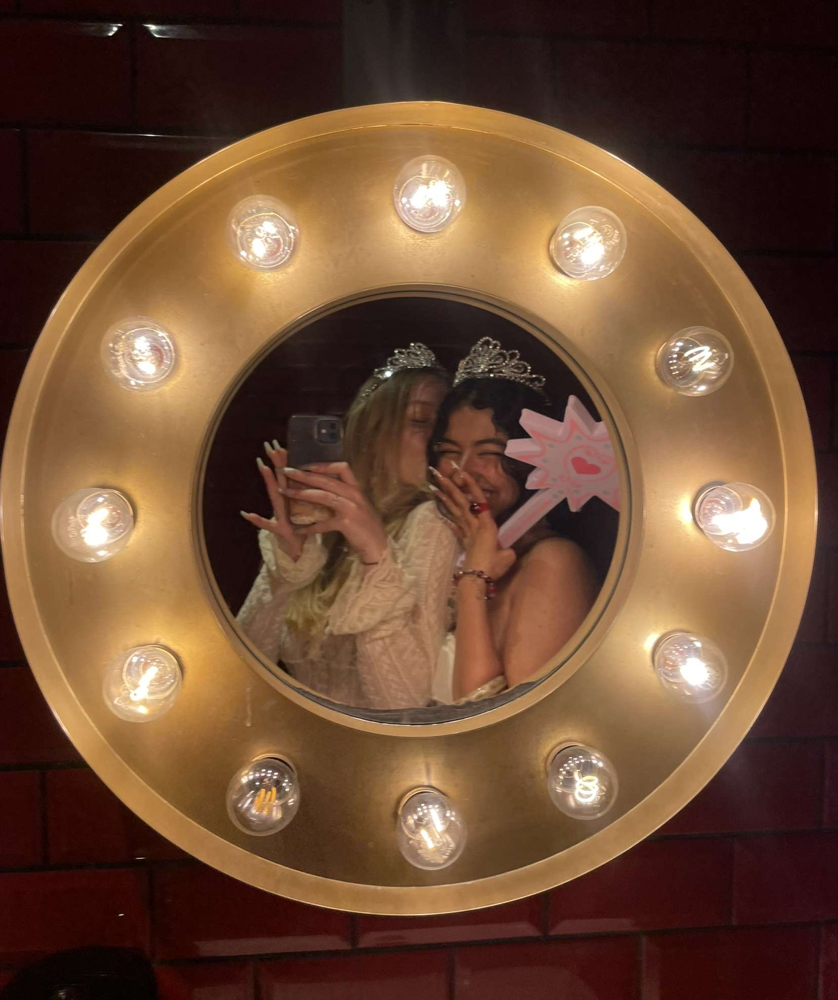
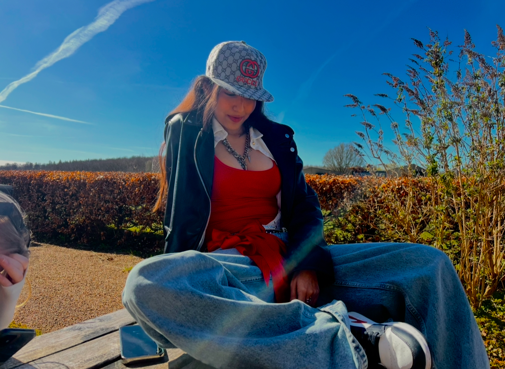
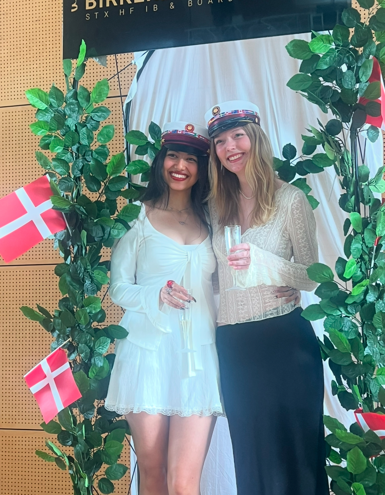
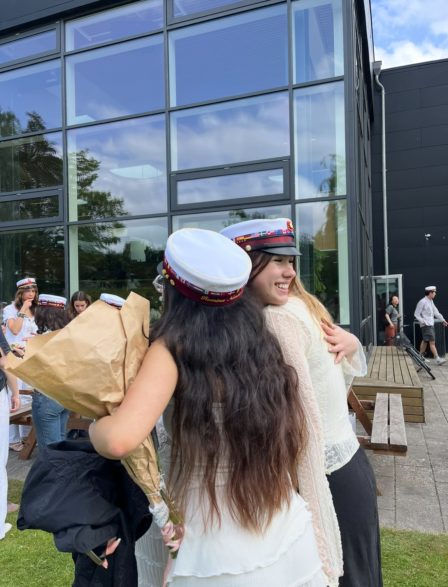
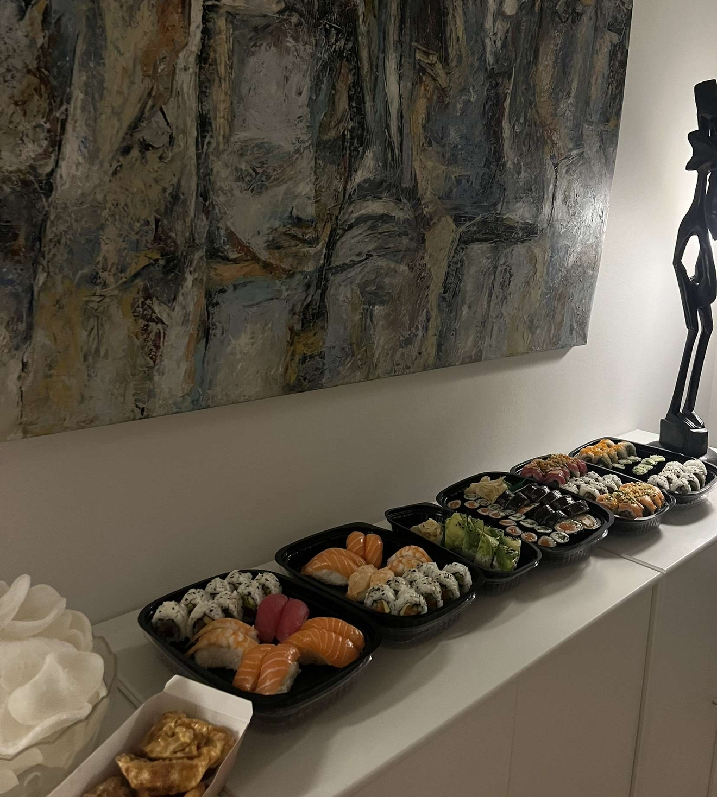
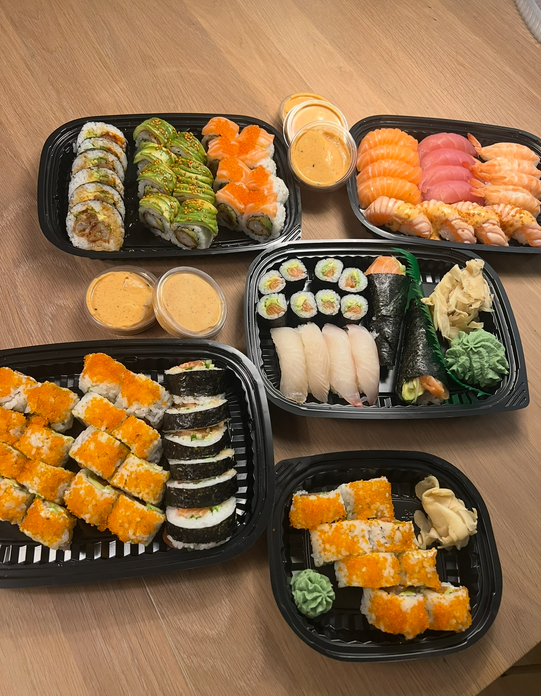

About Me




Origin & Studies
- Born: 17 July 2005, Babol, Mazandaran, Iran.
- Grew up: Moved to Tehran at age 5; studied there through 11th grade.
- Denmark (2022 →): Pre-IB + IB Diploma in Copenhagen.
- Now: Software Engineering student at VIA University College, Horsens.
- Path shift: From medicine to engineering/technology for a flexible, international, English-first career.


Life in Denmark 🇩🇰
Living in Horsens has made me independent and curious. I’ve built a circle of Danish and international friends, learned new routines, and found joy in a calm study rhythm.
Hobbies & Interests
Creative
- Nail extensions & nail art
- Painting & interior decor
- Fashion & styling
Active
- Badminton
- Basketball (casual)
Screen & Stories
Fantasy / Epic: Game of Thrones, House of the Dragon, LOTR, The Hobbit.
Medical dramas: Grey’s Anatomy, The Good Doctor, The Resident.
Anime favorites
Tastes ☕🍣
Food & Drinks
- Favorites: sushi, fruit-forward salads
- Flavors: sour & spicy > sweet or very salty
- Go-to drinks: matcha latte, Faxe Kondi


Home & Plants